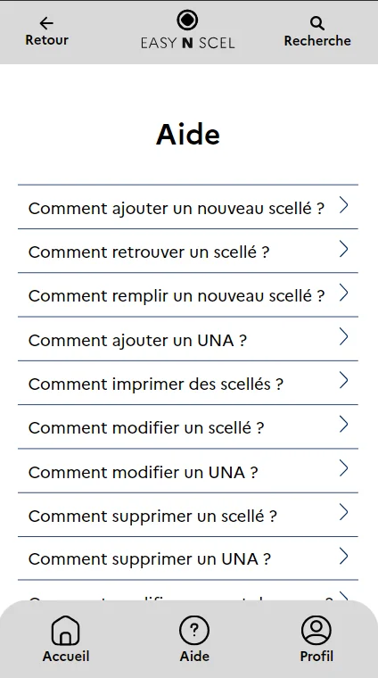
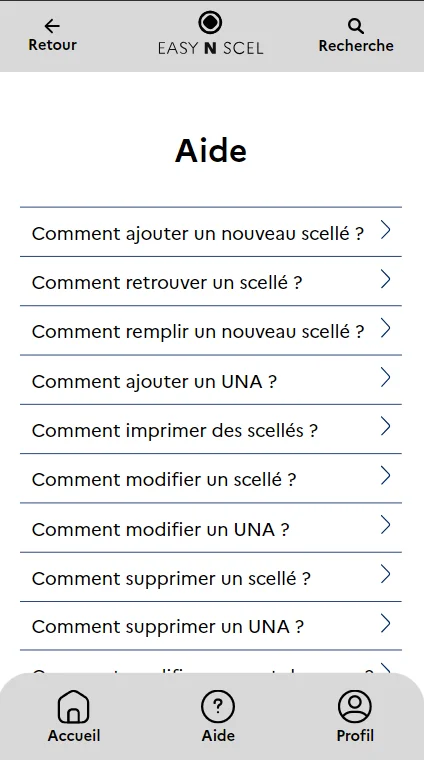
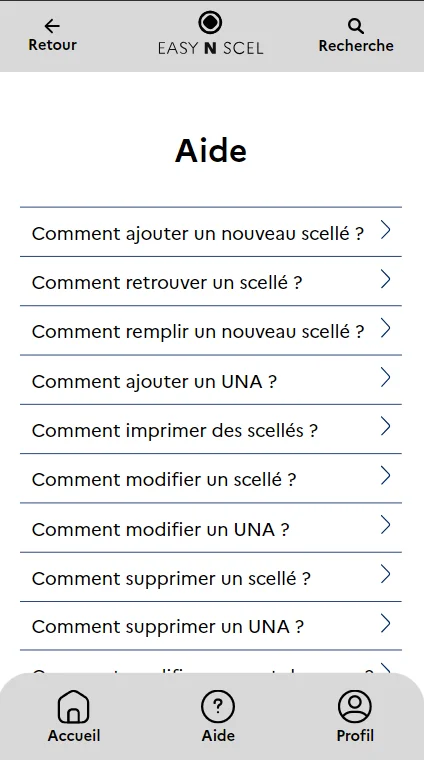

Pour un atelier concernant la cybersécurité, j'ai été amené avec mon groupe à
développer un moyen d'enregistrer des scellées judiciaires en ligne pour mobile en seulement 4 jours.
Voici le résultat :
Site internet
